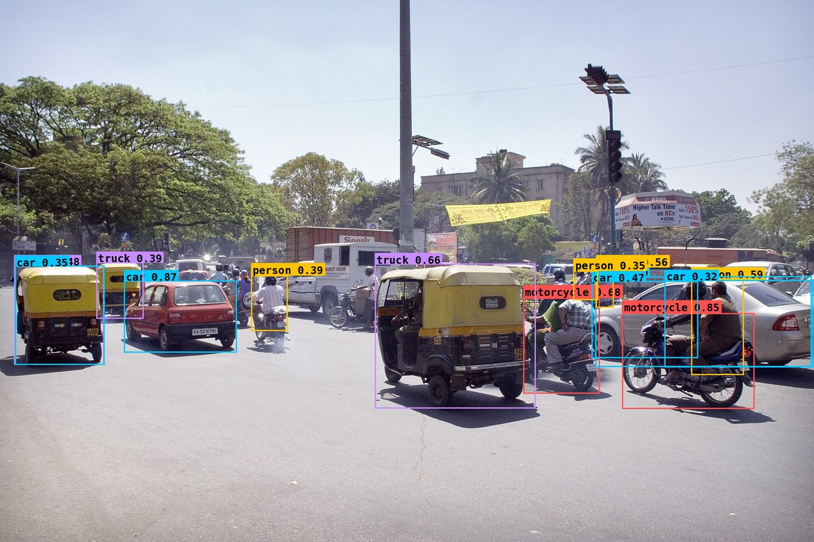
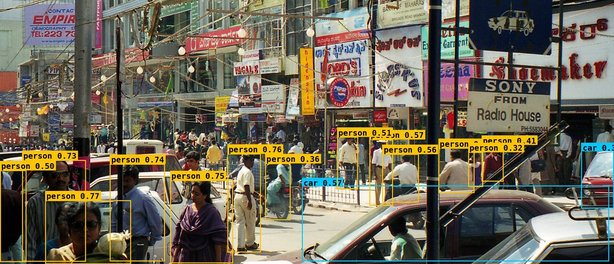
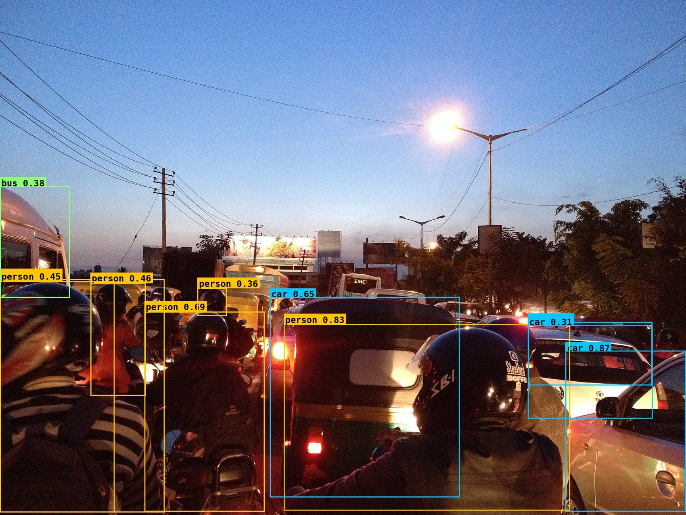
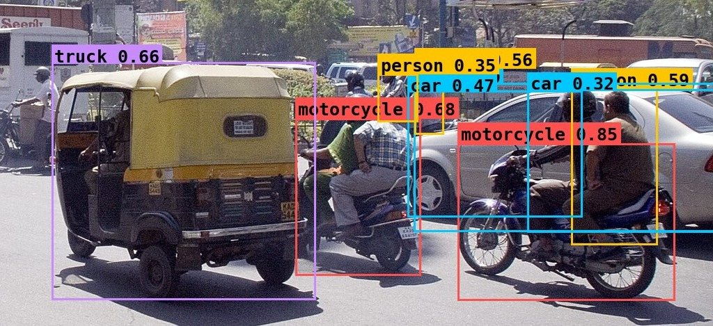
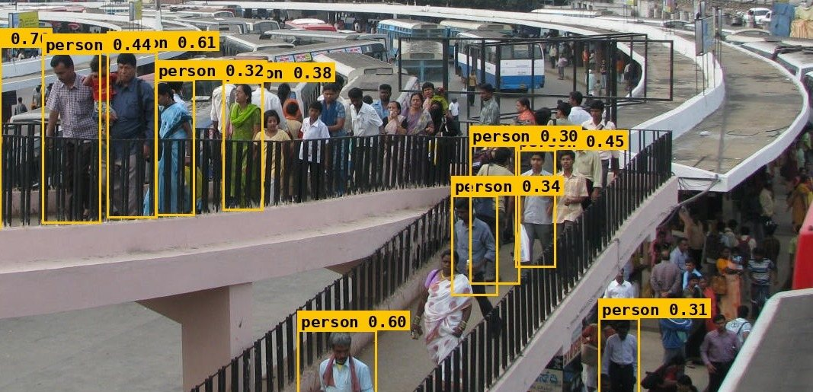
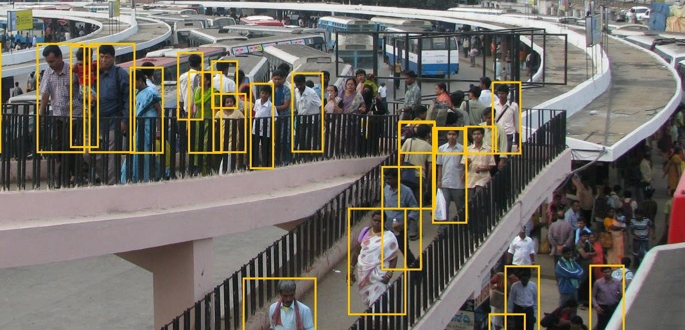

An offline object-detection and counting PoC on Raspberry Pi with ExecuTorch. It counts pedestrians and vehicles in short clips without sending a single frame to the cloud.

Most junctions, school gates and bus stands in our cities have no numbers attached to them. Nobody records how many people cross at 8:40 a.m. or how long the two-wheeler queue gets before the signal turns. The usual answer is a CCTV network with a control room or a cloud video service. That is too expensive for a ward office or a school, and it means moving footage of ordinary people off-site.
Counting is the useful part, not watching. A cheap device that runs locally and turns video into “23 people, 11 vehicles at 08:40” gives planners and traffic police the data they need. It needs no internet connection and stores no faces.
We will build an offline Edge AI system on a Raspberry Pi that counts pedestrians and vehicles at busy junctions and school zones. We use a pretrained COCO detector (YOLO11n, with SSDLite-MobileNetV3 as a fallback), exported to ExecuTorch (.pte) with the XNNPACK backend so it runs efficiently on the Pi’s ARM CPU. The pipeline samples frames from the organiser’s 10–20-second clip or image set and resizes each to 640 px. It runs inference locally, keeps only the chosen categories (person, car, bus, truck, motorcycle, bicycle), and applies confidence thresholding and non-maximum suppression before counting each frame. For every frame we print per-category counts, save an annotated image with boxes and a count overlay, and append a row to a CSV. We also report average inference time per frame, throughput in FPS, model size and memory use as measured on the Pi itself.
We didn’t want to find out on the day that the export fails, so we checked first. We exported YOLO11n to an ExecuTorch program with Ultralytics and ExecuTorch 1.6 (XNNPACK delegate). We then ran six public photos of Bengaluru streets through the ExecuTorch runtime. Every count and timing on this page comes from that run.
These timings are from a laptop CPU (Intel i7-13620H), not the Pi. The Raspberry Pi will be noticeably slower, and that Pi measurement is the number we will report in the final submission.
| Photo | Scene | Person | Car | 2-wheeler | Bus / truck | Total | ms |
|---|---|---|---|---|---|---|---|
| Junction, central Bengaluru | mixed traffic | 4 | 5 | 2 | 3 | 14 | 33.5 |
| Egipura signal, evening | queue at red light | 6 | 4 | – | 1 | 11 | 40.8 |
| Brigade Road | shopping street | 13 | 2 | – | – | 15 | 51.0 |
| Majestic bus stand | pedestrian ramp | 12 | – | – | – | 12 | 43.0 |
| Tree-lined arterial road | footpath + road | 6 | 4 | 3 | – | 13 | 41.7 |
| Signal, autos in queue | mixed traffic | 1 | 5 | – | 2 | 8 | 34.0 |
| All six | 42 | 20 | 5 | 6 | 73 | 40.7 |
Confidence threshold 0.30, NMS IoU 0.7. “2-wheeler” is COCO motorcycle; no bicycles were detected. The Majestic photo counts 12 people in a single pass; §4 shows why that is too low.



The pretrained model labels autos as truck or car. On Indian roads that is a large share of traffic, so a per-class count of trucks would be misleading. Since we are not allowed to retrain, we report one merged vehicle count (car + bus + truck + motorcycle) alongside the raw per-class numbers, and we state this caveat openly.


At Majestic, a single 640 px pass counted 12 people. Splitting the frame into four overlapping tiles and merging the results with NMS counted 27, but took 257 ms instead of 43.
School-zone crossing counts. A Pi mounted at a school gate counts children and two-wheelers at the crossing between 8 and 9 a.m. A week of numbers is enough to show the ward engineer or traffic police that the crossing needs a marshal, a speed table or a longer pedestrian phase. The video never leaves the box and no faces are stored, so the school can install it without a privacy argument. Junctions, bus stands and market streets follow the same pattern: one device, one CSV.
| Organiser clip or images, approved pretrained model, ExecuTorch on Pi | YOLO11n (COCO) as model.pte, XNNPACK delegate, run on the Raspberry Pi. Already exported and tested. |
| At least one category, with counts per frame | Six COCO classes plus a merged “vehicle” count, shown in the terminal and on every annotated frame. |
| Category and counts, plus two sample outputs | counts.csv and the full folder of annotated frames. We will pick the two clearest as samples. |
| Average inference time, model, throughput | Mean and median ms per frame, FPS, model size and peak RAM, all measured on the Pi. |
| Societal issue and one application (≤ 2 min) | Pedestrian load at school gates, explained below. |
$ python count.py --input samples/
arterial_05 person=6 vehicle=7 32.9 ms
brigade_03 person=13 vehicle=2 59.3 ms
egipura_02 person=6 vehicle=5 30.8 ms
junction_01 person=4 vehicle=10 39.8 ms
majestic_04 person=12 vehicle=0 32.5 ms
signal_06 person=1 vehicle=7 33.3 ms
────────────────────────────────────────────
frames=6 mean=38.1 ms thru≈26.2 img/s model=10.2 MB
This is real output from our counting script on the six test photos, run on the laptop. Single-run timings vary by ±15 ms between runs, which is why the table on page 2 averages ten runs. The same script writes counts.csv and one annotated JPG per frame.